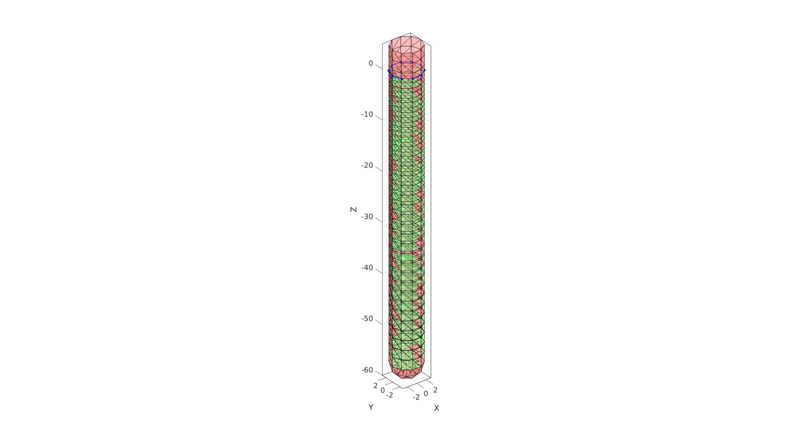
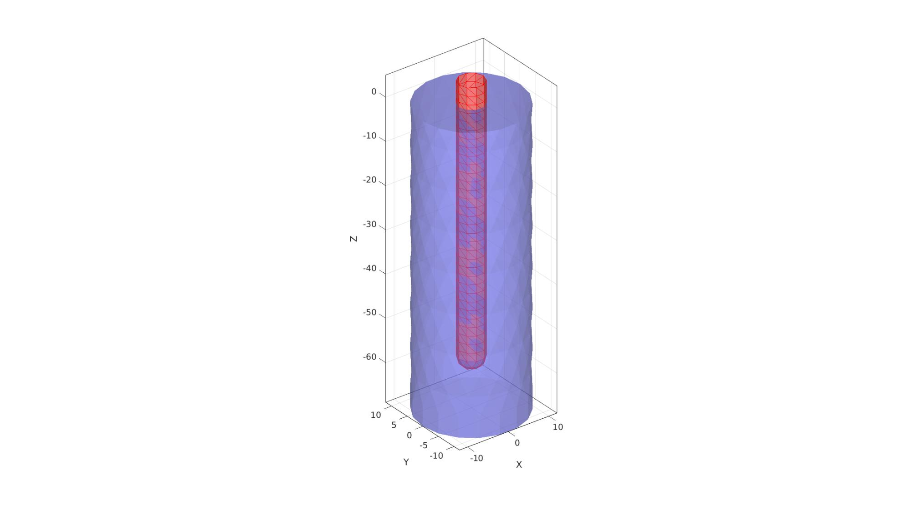

DEMO_febio_0056_cylinder_embedded_probe_02
Below is a demonstration for:
- Building geometry for a tissue segment with an embedded probe
- Defining the boundary conditions
- Coding the febio structure
- Running the model
- Importing and visualizing the displacement results
Contents
- Keywords
- Control parameters
- Build probe hole and probe
- Build tissue
- Cap ends
- Merge model components
- Mesh solid using tetgen
- Joining node sets
- Plotting tissue and probe meshes
- Define boundary condition node sets
- Create contact surfaces
- Defining the FEBio input structure
- Quick viewing of the FEBio input file structure
- Exporting the FEBio input file
- Running the FEBio analysis
- Import FEBio results
Keywords
- febio_spec version 4.0
- febio, FEBio
- probe
- rigid body constraints
- tetrahedral elements, tet4
- triangular elements, tri3
- static, solid
- hyperelastic, Ogden
- displacement logfile
- stress logfile
clear; close all; clc;
Plot settings
fontSize=15;
faceAlpha=1;
lineWidth1=1.5;
lineWidth2=3;
markerSize1=15;
markerSize2=30;
edgeWidth=2;
edgeColor='k';
faceAlpha1=1;
Control parameters
% Path names defaultFolder = fileparts(fileparts(mfilename('fullpath'))); savePath=fullfile(defaultFolder,'data','temp'); % Defining file names febioFebFileNamePart='tempModel'; febioFebFileName=fullfile(savePath,[febioFebFileNamePart,'.feb']); %FEB file name febioLogFileName=fullfile(savePath,[febioFebFileNamePart,'.txt']); %FEBio log file name febioLogFileName_disp=[febioFebFileNamePart,'_disp_out.txt']; %Log file name for exporting displacement febioLogFileName_force=[febioFebFileNamePart,'_force_out.txt']; %Log file name for exporting force febioLogFileName_strainEnergy=[febioFebFileNamePart,'_energy_out.txt']; %Log file name for exporting strain energy density febioLogFileName_strain=[febioFebFileNamePart,'_strain_out.txt']; %Log file name for exporting strain febioLogFileName_stress=[febioFebFileNamePart,'_stress_out.txt']; %Log file name for exporting strain %Geometric parameters probeHoleHeight=60; probeHoleRadius=3; probeHeight=65; probeRadius=3; nRefine=0; % Number of |subtri| refinements for icosahedron pointSpacingFactorTissue=2; dAdd=3*probeRadius; tissueRadius=probeRadius+dAdd; tissueHeight=probeHoleHeight+dAdd; volumeFactor=1; % Motion timing parameters motionFrequency=2; %Motion frequency cycleTime=1./motionFrequency; numMotionCycles=3; %Number of motion cycles timeTotal=cycleTime*numMotionCycles; %Total simulation time displacementMagnitude=1; %displacement magnitude t_load_curve=(0:cycleTime/200:timeTotal)'; a_load_curve=sin(t_load_curve*2*pi.*motionFrequency); timeSetMustPoints=(0:cycleTime/2:timeTotal)'; %Material parameter set formulationType=2; %Elastic=1 Visco=2 c1=1e-3; %Shear-modulus-like parameter m1=2; %Material parameter setting degree of non-linearity k_factor=1e2; %Bulk modulus factor k=c1*k_factor; %Bulk modulus g1=0.8; %Viscoelastic QLV proportional coefficient t1=1; %Viscoelastic QLV time coefficient d=1e-9; %Density (not required for static analysis) % FEA control settings analysisType='DYNAMIC'; numTimeSteps=numMotionCycles.*20; %Number of time steps desired max_refs=25; %Max reforms max_ups=0; %Set to zero to use full-Newton iterations opt_iter=8; %Optimum number of iterations max_retries=6; %Maximum number of retires dtmin=(timeTotal/numTimeSteps)/100; %Minimum time step size dtmax=timeTotal/numTimeSteps; %Maximum time step size symmetric_stiffness=0; min_residual=1e-20; runMode='external'; %'internal' or 'external'; %Contact parameters contactPenalty=10; % Start low, study penetration, increase if needed e.g. 0.1->1->10... laugon=0; minaug=1; maxaug=10; fric_coeff=0.1;
Visualize load curve
cFigure; hold on; title('Time curve') xlabel('Time (s)'); ylabel('Displacement (mm)'); for q=1:1:numel(timeSetMustPoints) h1=plot(timeSetMustPoints(q*ones(2,1)),[-displacementMagnitude displacementMagnitude],'r-','LineWidth', 1); end h2=plot(t_load_curve,a_load_curve.*displacementMagnitude,'b.-','MarkerSize',15,'LineWidth',2); legend([h1 h2],{'Must points','Load curve'},'Location','SouthOutside'); grid on; box on; axis tight; set(gca,'FontSize',fontSize); drawnow;

Build probe hole and probe
probeHoleMeshInputStruct.sphereRadius=probeHoleRadius;% => The radius of the hemi-spher portion probeHoleMeshInputStruct.nRefine=nRefine;% => Number of |subtri| refinements for icosahedron probeHoleMeshInputStruct.cylinderHeight=probeHoleHeight-probeHoleRadius;% => height of the cylinder part probeHoleMeshInputStruct.cylinderStepSize=[];% => Aproximate node spacing for cylinder portion probeHoleMeshInputStruct.patchType='tri_slash'; [Fph,Vph,~]=hemiSphereCylMesh(probeHoleMeshInputStruct); Fph=fliplr(Fph); %Invert face orientation Vph(:,3)=Vph(:,3)-max(Vph(:,3)); probeMeshInputStruct.sphereRadius=probeRadius;% => The radius of the hemi-spher portion probeMeshInputStruct.nRefine=nRefine;% => Number of |subtri| refinements for icosahedron probeMeshInputStruct.cylinderHeight=probeHeight-probeRadius;% => height of the cylinder part probeMeshInputStruct.cylinderStepSize=[];% => Aproximate node spacing for cylinder portion probeMeshInputStruct.patchType='tri_slash'; [Fp,Vp,~]=hemiSphereCylMesh(probeMeshInputStruct); Vp(:,3)=Vp(:,3)-min(Vp(:,3))+min(Vph(:,3)); %Get top curve Eb=patchBoundary(Fph,Vph); indProbeTop=edgeListToCurve(Eb); indProbeTop=indProbeTop(1:end-1); Vst=Vph(indProbeTop,:); pointSpacingProbe=mean(patchEdgeLengths(Fph,Vph));
Warning: Second input (vertices) no longer required. Update code to avoid future error.
cFigure; hold on; gpatch(Fph,Vph,'gw','k',0.5); gpatch(Fp,Vp,'rw','k',0.5); plotV(Vst,'b.-','lineWidth',lineWidth1,'MarkerSize',markerSize1); patchNormPlot(Fph,Vph); axisGeom(gca,fontSize); drawnow;
Build tissue
pointSpacing=pointSpacingProbe.*pointSpacingFactorTissue; %Sketching profile ns=150; t=linspace(0,2*pi,ns); t=t(1:end-1); x=tissueRadius*cos(t); y=tissueRadius*sin(t); z=zeros(size(x)); Vc=[x(:) y(:) z(:)]; np=ceil(max(pathLength(Vc))./pointSpacing); [Vc]=evenlySampleCurve(Vc,np,'pchip',1); % Extruding model cPar.numSteps=round(tissueHeight/pointSpacing); cPar.depth=tissueHeight; cPar.patchType='tri'; cPar.dir=-1; cPar.closeLoopOpt=1; [Fg,Vg]=polyExtrude(Vc,cPar); Fg=fliplr(Fg); Vgb=Vg(cPar.numSteps:cPar.numSteps:end,:); Vgt=Vg(1:cPar.numSteps:end,:);
Cap ends
regionCell={Vgt(:,[1 2]),Vst(:,[1 2])};
[Ft,Vt]=regionTriMesh2D(regionCell,pointSpacing,0,0);
Vt(:,3)=mean(Vgt(:,3));
regionCell={Vgb(:,[1 2])};
[Fb,Vb]=regionTriMesh2D(regionCell,pointSpacing,0,0);
Fb=fliplr(Fb); %flip face orientation
Vb(:,3)=mean(Vgb(:,3));
Visualize
cFigure; hold on; gpatch(Fph,Vph,'rw','k',0.5); gpatch(Fg,Vg,'gw','k',0.5); gpatch(Fb,Vb,'bw','k',0.5); gpatch(Ft,Vt,'bw','k',0.5); plotV(Vgb,'b.-','lineWidth',lineWidth1,'MarkerSize',markerSize1); plotV(Vgt,'b.-','lineWidth',lineWidth1,'MarkerSize',markerSize1); plotV(Vst,'b.-','lineWidth',lineWidth1,'MarkerSize',markerSize1); axisGeom(gca,fontSize); drawnow;

Merge model components
[F,V,C]=joinElementSets({Fg,Ft,Fb,Fph},{Vg,Vt,Vb,Vph});
[F,V]=mergeVertices(F,V);
cFigure; subplot(1,2,1); hold on; gpatch(F,V,C,'none',0.5); axisGeom(gca,fontSize); colormap gjet; icolorbar; subplot(1,2,2); hold on; gpatch(F,V,C); patchNormPlot(F,V,2); plotV(Vst,'b.-','lineWidth',lineWidth1,'MarkerSize',markerSize1); axisGeom(gca,fontSize); colormap gjet; icolorbar; drawnow;

Mesh solid using tetgen
Create tetgen meshing input structure
[regionA]=tetVolMeanEst(Fg,Vg); %Volume for a regular tet based on edge lengths V_inner=getInnerPoint(F,V); %Interior point for region inputStruct.stringOpt='-pq1.2AaY'; inputStruct.Faces=F; inputStruct.Nodes=V; inputStruct.holePoints=[]; inputStruct.faceBoundaryMarker=C; %Face boundary markers inputStruct.regionPoints=V_inner; %region points inputStruct.regionA=regionA*volumeFactor; %Desired volume for tets inputStruct.minRegionMarker=2; %Minimum region marker
Mesh model using tetrahedral elements using tetGen
[meshOutput]=runTetGen(inputStruct); %Run tetGen
%%%%%%%%%%%%%%%%%%%%%%%%%%%%%%%%%%%%%%%%%%%%% --- TETGEN Tetrahedral meshing --- 27-Apr-2023 15:07:37 %%%%%%%%%%%%%%%%%%%%%%%%%%%%%%%%%%%%%%%%%%%%% --- Writing SMESH file --- 27-Apr-2023 15:07:37 ----> Adding node field ----> Adding facet field ----> Adding holes specification ----> Adding region specification --- Done --- 27-Apr-2023 15:07:37 --- Running TetGen to mesh input boundary--- 27-Apr-2023 15:07:37 Opening /mnt/data/MATLAB/GIBBON/data/temp/temp.smesh. Delaunizing vertices... Delaunay seconds: 0.038502 Creating surface mesh ... Surface mesh seconds: 0.000888 Recovering boundaries... Boundary recovery seconds: 0.003378 Removing exterior tetrahedra ... Warning: The 1-th region point lies outside the convex hull. Spreading region attributes. Exterior tets removal seconds: 0.000764 Recovering Delaunayness... Delaunay recovery seconds: 0.005064 Refining mesh... Refinement seconds: 0.029581 Smoothing vertices... Mesh smoothing seconds: 0.044468 Improving mesh... Mesh improvement seconds: 0.001079 Writing /mnt/data/MATLAB/GIBBON/data/temp/temp.1.node. Writing /mnt/data/MATLAB/GIBBON/data/temp/temp.1.ele. Writing /mnt/data/MATLAB/GIBBON/data/temp/temp.1.face. Writing /mnt/data/MATLAB/GIBBON/data/temp/temp.1.edge. Output seconds: 0.01148 Total running seconds: 0.13531 Statistics: Input points: 649 Input facets: 1294 Input segments: 1941 Input holes: 0 Input regions: 1 Mesh points: 1097 Mesh tetrahedra: 4774 Mesh faces: 10195 Mesh faces on exterior boundary: 1294 Mesh faces on input facets: 1294 Mesh edges on input segments: 1941 Steiner points inside domain: 448 --- Done --- 27-Apr-2023 15:07:37 %%%%%%%%%%%%%%%%%%%%%%%%%%%%%%%%%%%%%%%%%%%%% --- Importing TetGen files --- 27-Apr-2023 15:07:37 --- Done --- 27-Apr-2023 15:07:37
Visualize mesh
meshView(meshOutput);

Access model element and patch data
F=meshOutput.faces; V=meshOutput.nodes; C=meshOutput.faceMaterialID; E=meshOutput.elements; elementMaterialID=meshOutput.elementMaterialID; Fb=meshOutput.facesBoundary; Cb=meshOutput.boundaryMarker;
Joining node sets
[Fp,Vp]=subtri(Fp,Vp,1);
Fp=Fp+size(V,1); V=[V; Vp]; center_of_mass_probe=mean(Vp,1);
Plotting tissue and probe meshes
cFigure; hold on; gpatch(Fb,V,'bw','none',0.5); gpatch(Fp,V,'rw','r',1); axisGeom(gca,fontSize); camlight headlight; drawnow;
Define boundary condition node sets
logicRigid= Cb==1 | Cb==3; bcSupportList=Fb(logicRigid,:); bcSupportList=unique(bcSupportList(:));
Visualize boundary conditions
cFigure; hold on; gpatch(Fb,V,'kw','none',0.25); hp1(1)=plotV(V(bcSupportList,:),'k.','lineWidth',lineWidth1,'MarkerSize',markerSize1); hp1(2)=gpatch(Fp,V,'rw','k',1); legend(hp1,{'BC Full support','Rigid body with prescribed displacement'}); axisGeom(gca,fontSize); drawnow;

Create contact surfaces
F_contact_primary=fliplr(Fb(Cb==4,:)); F_contact_secondary=Fp;
Visualize contact surfaces
cFigure; subplot(1,2,1); hold on; title('Contact set: primary','FontSize',fontSize); gpatch(Fb,V,'w','none',0.25); gpatch(F_contact_primary,V,'bw','k',1); patchNormPlot(F_contact_primary,V); axisGeom(gca,fontSize); camlight headlight; subplot(1,2,2); hold on; title('Contact set: secondary','FontSize',fontSize); gpatch(F_contact_secondary,V,'gw','k',1); patchNormPlot(F_contact_secondary,V); axisGeom(gca,fontSize); camlight headlight; drawnow;

Defining the FEBio input structure
See also febioStructTemplate and febioStruct2xml and the FEBio user manual.
%Get a template with default settings [febio_spec]=febioStructTemplate; %febio_spec version febio_spec.ATTR.version='4.0'; %Module section febio_spec.Module.ATTR.type='solid'; %Control section febio_spec.Control.analysis=analysisType; febio_spec.Control.time_steps=numTimeSteps; febio_spec.Control.step_size=timeTotal/numTimeSteps; febio_spec.Control.solver.max_refs=max_refs; febio_spec.Control.solver.qn_method.max_ups=max_ups; febio_spec.Control.solver.symmetric_stiffness=symmetric_stiffness; febio_spec.Control.time_stepper.dtmin=dtmin; % febio_spec.Control.time_stepper.dtmax=dtmax; febio_spec.Control.time_stepper=rmfield(febio_spec.Control.time_stepper,'dtmax'); %remove default febio_spec.Control.time_stepper.dtmax.VAL=dtmax; febio_spec.Control.time_stepper.dtmax.ATTR.lc=2; febio_spec.Control.time_stepper.max_retries=max_retries; febio_spec.Control.time_stepper.opt_iter=opt_iter; % febio_spec.Control.plot_level='PLOT_MUST_POINTS'; % febio_spec.Control.output_level='OUTPUT_MUST_POINTS'; %Material section materialName1='Material1'; febio_spec.Material.material{1}.ATTR.name=materialName1; switch formulationType case 1 %Elastic febio_spec.Material.material{1}.ATTR.type='Ogden unconstrained'; febio_spec.Material.material{1}.ATTR.id=1; febio_spec.Material.material{1}.c1=c1; febio_spec.Material.material{1}.m1=m1; febio_spec.Material.material{1}.c2=c1; febio_spec.Material.material{1}.m2=-m1; febio_spec.Material.material{1}.cp=k; febio_spec.Material.material{1}.density=d; case 2 %Elastic %Viscoelastic part febio_spec.Material.material{1}.ATTR.type='viscoelastic'; febio_spec.Material.material{1}.ATTR.id=1; febio_spec.Material.material{1}.g1=g1; febio_spec.Material.material{1}.t1=t1; febio_spec.Material.material{1}.density=d; %Elastic part febio_spec.Material.material{1}.elastic{1}.ATTR.type='Ogden unconstrained'; febio_spec.Material.material{1}.elastic{1}.c1=c1; febio_spec.Material.material{1}.elastic{1}.m1=m1; febio_spec.Material.material{1}.elastic{1}.c2=c1; febio_spec.Material.material{1}.elastic{1}.m2=-m1; febio_spec.Material.material{1}.elastic{1}.cp=k; febio_spec.Material.material{1}.elastic{1}.density=d; end materialName2='Material2'; febio_spec.Material.material{2}.ATTR.name=materialName2; febio_spec.Material.material{2}.ATTR.type='rigid body'; febio_spec.Material.material{2}.ATTR.id=2; febio_spec.Material.material{2}.density=d; febio_spec.Material.material{2}.center_of_mass=center_of_mass_probe; %Mesh section % -> Nodes febio_spec.Mesh.Nodes{1}.ATTR.name='nodeSet_all'; %The node set name febio_spec.Mesh.Nodes{1}.node.ATTR.id=(1:size(V,1))'; %The node id's febio_spec.Mesh.Nodes{1}.node.VAL=V; %The nodel coordinates % -> Elements partName1='Part1_tissue'; febio_spec.Mesh.Elements{1}.ATTR.name=partName1; %Name of this part febio_spec.Mesh.Elements{1}.ATTR.type='tet4'; %Element type febio_spec.Mesh.Elements{1}.elem.ATTR.id=(1:1:size(E,1))'; %Element id's febio_spec.Mesh.Elements{1}.elem.VAL=E; %The element matrix partName2='Part2_probe'; febio_spec.Mesh.Elements{2}.ATTR.name=partName2; %Name of this part febio_spec.Mesh.Elements{2}.ATTR.type='tri3'; %Element type febio_spec.Mesh.Elements{2}.elem.ATTR.id=size(E,1)+(1:1:size(Fp,1))'; %Element id's febio_spec.Mesh.Elements{2}.elem.VAL=Fp; %The element matrix % -> NodeSets nodeSetName1='bcSupportList'; febio_spec.Mesh.NodeSet{1}.ATTR.name=nodeSetName1; febio_spec.Mesh.NodeSet{1}.VAL=mrow(bcSupportList); %MeshDomains section febio_spec.MeshDomains.SolidDomain.ATTR.name=partName1; febio_spec.MeshDomains.SolidDomain.ATTR.mat=materialName1; febio_spec.MeshDomains.ShellDomain.ATTR.name=partName2; febio_spec.MeshDomains.ShellDomain.ATTR.mat=materialName2; % -> Surfaces surfaceName1='contactSurface1'; febio_spec.Mesh.Surface{1}.ATTR.name=surfaceName1; febio_spec.Mesh.Surface{1}.tri3.ATTR.id=(1:1:size(F_contact_primary,1))'; febio_spec.Mesh.Surface{1}.tri3.VAL=F_contact_primary; surfaceName2='contactSurface2'; febio_spec.Mesh.Surface{2}.ATTR.name=surfaceName2; febio_spec.Mesh.Surface{2}.tri3.ATTR.id=(1:1:size(F_contact_secondary,1))'; febio_spec.Mesh.Surface{2}.tri3.VAL=F_contact_secondary; % -> Surface pairs contactPairName='Contact1'; febio_spec.Mesh.SurfacePair{1}.ATTR.name=contactPairName; febio_spec.Mesh.SurfacePair{1}.primary=surfaceName1; febio_spec.Mesh.SurfacePair{1}.secondary=surfaceName2; %Boundary condition section % -> Fix boundary conditions febio_spec.Boundary.bc{1}.ATTR.name='zero_displacement_xyz'; febio_spec.Boundary.bc{1}.ATTR.type='zero displacement'; febio_spec.Boundary.bc{1}.ATTR.node_set=nodeSetName1; febio_spec.Boundary.bc{1}.x_dof=1; febio_spec.Boundary.bc{1}.y_dof=1; febio_spec.Boundary.bc{1}.z_dof=1; %Rigid section % ->Rigid body fix boundary conditions febio_spec.Rigid.rigid_bc{1}.ATTR.name='RigidFix'; febio_spec.Rigid.rigid_bc{1}.ATTR.type='rigid_fixed'; febio_spec.Rigid.rigid_bc{1}.rb=2; % febio_spec.Rigid.rigid_bc{1}.Rx_dof=1; febio_spec.Rigid.rigid_bc{1}.Ry_dof=1; febio_spec.Rigid.rigid_bc{1}.Rz_dof=1; febio_spec.Rigid.rigid_bc{1}.Ru_dof=1; febio_spec.Rigid.rigid_bc{1}.Rv_dof=1; febio_spec.Rigid.rigid_bc{1}.Rw_dof=1; % ->Rigid body prescribe boundary conditions febio_spec.Rigid.rigid_bc{2}.ATTR.name='RigidPrescribe'; febio_spec.Rigid.rigid_bc{2}.ATTR.type='rigid_displacement'; febio_spec.Rigid.rigid_bc{2}.rb=2; febio_spec.Rigid.rigid_bc{2}.dof='x'; febio_spec.Rigid.rigid_bc{2}.value.ATTR.lc=1; febio_spec.Rigid.rigid_bc{2}.value.VAL=displacementMagnitude; febio_spec.Rigid.rigid_bc{2}.relative=0; %LoadData section % -> load_controller febio_spec.LoadData.load_controller{1}.ATTR.name='LC_1'; febio_spec.LoadData.load_controller{1}.ATTR.id=1; febio_spec.LoadData.load_controller{1}.ATTR.type='loadcurve'; febio_spec.LoadData.load_controller{1}.interpolate='LINEAR'; %febio_spec.LoadData.load_controller{1}.extend='CONSTANT'; febio_spec.LoadData.load_controller{1}.points.pt.VAL=[t_load_curve(:) a_load_curve(:)]; febio_spec.LoadData.load_controller{2}.ATTR.name='LC_2'; febio_spec.LoadData.load_controller{2}.ATTR.id=2; febio_spec.LoadData.load_controller{2}.ATTR.type='loadcurve'; febio_spec.LoadData.load_controller{2}.interpolate='STEP'; %febio_spec.LoadData.load_controller{2}.extend='CONSTANT'; febio_spec.LoadData.load_controller{2}.points.pt.VAL=[timeSetMustPoints dtmax.*ones(size(timeSetMustPoints))]; %Contact section febio_spec.Contact.contact{1}.ATTR.type='sliding-elastic'; febio_spec.Contact.contact{1}.ATTR.surface_pair=contactPairName; febio_spec.Contact.contact{1}.two_pass=0; febio_spec.Contact.contact{1}.laugon=laugon; febio_spec.Contact.contact{1}.tolerance=0.2; febio_spec.Contact.contact{1}.gaptol=0; febio_spec.Contact.contact{1}.minaug=minaug; febio_spec.Contact.contact{1}.maxaug=maxaug; febio_spec.Contact.contact{1}.search_tol=0.01; % febio_spec.Contact.contact{1}.search_radius=0.1*sqrt(sum((max(V,[],1)-min(V,[],1)).^2,2)); febio_spec.Contact.contact{1}.symmetric_stiffness=0; febio_spec.Contact.contact{1}.auto_penalty=1; febio_spec.Contact.contact{1}.update_penalty=1; febio_spec.Contact.contact{1}.penalty=contactPenalty; febio_spec.Contact.contact{1}.fric_coeff=fric_coeff; %Output section % -> log file febio_spec.Output.logfile.ATTR.file=febioLogFileName; febio_spec.Output.logfile.node_data{1}.ATTR.file=febioLogFileName_disp; febio_spec.Output.logfile.node_data{1}.ATTR.data='ux;uy;uz'; febio_spec.Output.logfile.node_data{1}.ATTR.delim=','; febio_spec.Output.logfile.node_data{2}.ATTR.file=febioLogFileName_force; febio_spec.Output.logfile.node_data{2}.ATTR.data='Rx;Ry;Rz'; febio_spec.Output.logfile.node_data{2}.ATTR.delim=','; febio_spec.Output.logfile.element_data{1}.ATTR.file=febioLogFileName_strain; febio_spec.Output.logfile.element_data{1}.ATTR.data='E1;E2;E3'; febio_spec.Output.logfile.element_data{1}.ATTR.delim=','; febio_spec.Output.logfile.element_data{2}.ATTR.file=febioLogFileName_stress; febio_spec.Output.logfile.element_data{2}.ATTR.data='s1;s2;s3';%'sx;sy;sz;sxy;syz;sxz'; febio_spec.Output.logfile.element_data{2}.ATTR.delim=','; % Plotfile section febio_spec.Output.plotfile.compression=0;
Quick viewing of the FEBio input file structure
The febView function can be used to view the xml structure in a MATLAB figure window.
febView(febio_spec); %Viewing the febio file
Exporting the FEBio input file
Exporting the febio_spec structure to an FEBio input file is done using the febioStruct2xml function.
febioStruct2xml(febio_spec,febioFebFileName); %Exporting to file and domNode %system(['gedit ',febioFebFileName,' &']);
Running the FEBio analysis
To run the analysis defined by the created FEBio input file the runMonitorFEBio function is used. The input for this function is a structure defining job settings e.g. the FEBio input file name. The optional output runFlag informs the user if the analysis was run succesfully.
febioAnalysis.run_filename=febioFebFileName; %The input file name febioAnalysis.run_logname=febioLogFileName; %The name for the log file febioAnalysis.disp_on=1; %Display information on the command window febioAnalysis.runMode=runMode; febioAnalysis.maxLogCheckTime=10; %Max log file checking time [runFlag]=runMonitorFEBio(febioAnalysis);%START FEBio NOW!!!!!!!!
%%%%%%%%%%%%%%%%%%%%%%%%%%%%%%%%%%%%%%%%%%%%%%%%%%%%%%%%%%%%%%%%%%%%%%%%%%%
--------> RUNNING/MONITORING FEBIO JOB <-------- 27-Apr-2023 15:07:45
FEBio path: /home/kevin/FEBioStudio2/bin/febio4
# Attempt removal of existing log files 27-Apr-2023 15:07:45
* Removal succesful 27-Apr-2023 15:07:45
# Attempt removal of existing .xplt files 27-Apr-2023 15:07:45
* Removal succesful 27-Apr-2023 15:07:46
# Starting FEBio... 27-Apr-2023 15:07:46
Max. total analysis time is: Inf s
* Waiting for log file creation 27-Apr-2023 15:07:46
Max. wait time: 10 s
* Log file found. 27-Apr-2023 15:07:46
# Parsing log file... 27-Apr-2023 15:07:46
number of iterations : 10 27-Apr-2023 15:07:47
number of reformations : 10 27-Apr-2023 15:07:47
------- converged at time : 0.025 27-Apr-2023 15:07:47
number of iterations : 6 27-Apr-2023 15:07:48
number of reformations : 6 27-Apr-2023 15:07:48
------- converged at time : 0.0473871 27-Apr-2023 15:07:48
number of iterations : 6 27-Apr-2023 15:07:48
number of reformations : 6 27-Apr-2023 15:07:48
------- converged at time : 0.0701784 27-Apr-2023 15:07:48
number of iterations : 7 27-Apr-2023 15:07:49
number of reformations : 7 27-Apr-2023 15:07:49
------- converged at time : 0.0933113 27-Apr-2023 15:07:49
number of iterations : 6 27-Apr-2023 15:07:49
number of reformations : 6 27-Apr-2023 15:07:49
------- converged at time : 0.116573 27-Apr-2023 15:07:49
number of iterations : 5 27-Apr-2023 15:07:50
number of reformations : 5 27-Apr-2023 15:07:50
------- converged at time : 0.140104 27-Apr-2023 15:07:50
number of iterations : 6 27-Apr-2023 15:07:50
number of reformations : 6 27-Apr-2023 15:07:50
------- converged at time : 0.163929 27-Apr-2023 15:07:50
number of iterations : 6 27-Apr-2023 15:07:51
number of reformations : 6 27-Apr-2023 15:07:51
------- converged at time : 0.187935 27-Apr-2023 15:07:51
number of iterations : 8 27-Apr-2023 15:07:52
number of reformations : 8 27-Apr-2023 15:07:52
------- converged at time : 0.212095 27-Apr-2023 15:07:52
number of iterations : 6 27-Apr-2023 15:07:52
number of reformations : 6 27-Apr-2023 15:07:52
------- converged at time : 0.236255 27-Apr-2023 15:07:52
number of iterations : 7 27-Apr-2023 15:07:53
number of reformations : 7 27-Apr-2023 15:07:53
------- converged at time : 0.25 27-Apr-2023 15:07:53
number of iterations : 7 27-Apr-2023 15:07:54
number of reformations : 7 27-Apr-2023 15:07:54
------- converged at time : 0.274339 27-Apr-2023 15:07:54
number of iterations : 6 27-Apr-2023 15:07:54
number of reformations : 6 27-Apr-2023 15:07:54
------- converged at time : 0.298724 27-Apr-2023 15:07:54
number of iterations : 6 27-Apr-2023 15:07:55
number of reformations : 6 27-Apr-2023 15:07:55
------- converged at time : 0.323204 27-Apr-2023 15:07:55
number of iterations : 7 27-Apr-2023 15:07:56
number of reformations : 7 27-Apr-2023 15:07:56
------- converged at time : 0.347764 27-Apr-2023 15:07:56
number of iterations : 7 27-Apr-2023 15:07:57
number of reformations : 7 27-Apr-2023 15:07:57
------- converged at time : 0.372355 27-Apr-2023 15:07:57
number of iterations : 5 27-Apr-2023 15:07:57
number of reformations : 5 27-Apr-2023 15:07:57
------- converged at time : 0.396974 27-Apr-2023 15:07:57
number of iterations : 6 27-Apr-2023 15:07:58
number of reformations : 6 27-Apr-2023 15:07:58
------- converged at time : 0.421669 27-Apr-2023 15:07:58
number of iterations : 7 27-Apr-2023 15:07:58
number of reformations : 7 27-Apr-2023 15:07:58
------- converged at time : 0.446411 27-Apr-2023 15:07:58
number of iterations : 6 27-Apr-2023 15:07:59
number of reformations : 6 27-Apr-2023 15:07:59
------- converged at time : 0.471171 27-Apr-2023 15:07:59
number of iterations : 6 27-Apr-2023 15:08:00
number of reformations : 6 27-Apr-2023 15:08:00
------- converged at time : 0.495969 27-Apr-2023 15:08:00
number of iterations : 5 27-Apr-2023 15:08:00
number of reformations : 5 27-Apr-2023 15:08:00
------- converged at time : 0.5 27-Apr-2023 15:08:00
number of iterations : 7 27-Apr-2023 15:08:01
number of reformations : 7 27-Apr-2023 15:08:01
------- converged at time : 0.524863 27-Apr-2023 15:08:01
number of iterations : 6 27-Apr-2023 15:08:01
number of reformations : 6 27-Apr-2023 15:08:01
------- converged at time : 0.549735 27-Apr-2023 15:08:01
number of iterations : 6 27-Apr-2023 15:08:02
number of reformations : 6 27-Apr-2023 15:08:02
------- converged at time : 0.574627 27-Apr-2023 15:08:02
number of iterations : 7 27-Apr-2023 15:08:02
number of reformations : 7 27-Apr-2023 15:08:02
------- converged at time : 0.599536 27-Apr-2023 15:08:02
number of iterations : 6 27-Apr-2023 15:08:03
number of reformations : 6 27-Apr-2023 15:08:03
------- converged at time : 0.624451 27-Apr-2023 15:08:03
number of iterations : 6 27-Apr-2023 15:08:03
number of reformations : 6 27-Apr-2023 15:08:03
------- converged at time : 0.649379 27-Apr-2023 15:08:03
number of iterations : 6 27-Apr-2023 15:08:04
number of reformations : 6 27-Apr-2023 15:08:04
------- converged at time : 0.674319 27-Apr-2023 15:08:04
number of iterations : 5 27-Apr-2023 15:08:04
number of reformations : 5 27-Apr-2023 15:08:04
------- converged at time : 0.699267 27-Apr-2023 15:08:04
number of iterations : 6 27-Apr-2023 15:08:05
number of reformations : 6 27-Apr-2023 15:08:05
------- converged at time : 0.724226 27-Apr-2023 15:08:05
number of iterations : 5 27-Apr-2023 15:08:05
number of reformations : 5 27-Apr-2023 15:08:05
------- converged at time : 0.749192 27-Apr-2023 15:08:05
number of iterations : 4 27-Apr-2023 15:08:06
number of reformations : 4 27-Apr-2023 15:08:06
------- converged at time : 0.75 27-Apr-2023 15:08:06
number of iterations : 8 27-Apr-2023 15:08:06
number of reformations : 8 27-Apr-2023 15:08:06
------- converged at time : 0.774978 27-Apr-2023 15:08:06
number of iterations : 6 27-Apr-2023 15:08:07
number of reformations : 6 27-Apr-2023 15:08:07
------- converged at time : 0.799956 27-Apr-2023 15:08:07
number of iterations : 6 27-Apr-2023 15:08:07
number of reformations : 6 27-Apr-2023 15:08:07
------- converged at time : 0.824937 27-Apr-2023 15:08:07
number of iterations : 7 27-Apr-2023 15:08:08
number of reformations : 7 27-Apr-2023 15:08:08
------- converged at time : 0.849921 27-Apr-2023 15:08:08
number of iterations : 6 27-Apr-2023 15:08:09
number of reformations : 6 27-Apr-2023 15:08:09
------- converged at time : 0.874906 27-Apr-2023 15:08:09
number of iterations : 5 27-Apr-2023 15:08:09
number of reformations : 5 27-Apr-2023 15:08:09
------- converged at time : 0.899894 27-Apr-2023 15:08:09
number of iterations : 6 27-Apr-2023 15:08:10
number of reformations : 6 27-Apr-2023 15:08:10
------- converged at time : 0.924884 27-Apr-2023 15:08:10
number of iterations : 6 27-Apr-2023 15:08:11
number of reformations : 6 27-Apr-2023 15:08:11
------- converged at time : 0.949875 27-Apr-2023 15:08:11
number of iterations : 6 27-Apr-2023 15:08:12
number of reformations : 6 27-Apr-2023 15:08:12
------- converged at time : 0.974868 27-Apr-2023 15:08:12
number of iterations : 5 27-Apr-2023 15:08:12
number of reformations : 5 27-Apr-2023 15:08:12
------- converged at time : 0.999862 27-Apr-2023 15:08:12
number of iterations : 3 27-Apr-2023 15:08:13
number of reformations : 3 27-Apr-2023 15:08:13
------- converged at time : 1 27-Apr-2023 15:08:13
number of iterations : 7 27-Apr-2023 15:08:13
number of reformations : 7 27-Apr-2023 15:08:13
------- converged at time : 1.025 27-Apr-2023 15:08:13
number of iterations : 6 27-Apr-2023 15:08:14
number of reformations : 6 27-Apr-2023 15:08:14
------- converged at time : 1.04999 27-Apr-2023 15:08:14
number of iterations : 6 27-Apr-2023 15:08:14
number of reformations : 6 27-Apr-2023 15:08:14
------- converged at time : 1.07499 27-Apr-2023 15:08:14
number of iterations : 7 27-Apr-2023 15:08:15
number of reformations : 7 27-Apr-2023 15:08:15
------- converged at time : 1.09999 27-Apr-2023 15:08:15
number of iterations : 6 27-Apr-2023 15:08:15
number of reformations : 6 27-Apr-2023 15:08:15
------- converged at time : 1.12498 27-Apr-2023 15:08:15
number of iterations : 5 27-Apr-2023 15:08:16
number of reformations : 5 27-Apr-2023 15:08:16
------- converged at time : 1.14998 27-Apr-2023 15:08:16
number of iterations : 6 27-Apr-2023 15:08:16
number of reformations : 6 27-Apr-2023 15:08:16
------- converged at time : 1.17498 27-Apr-2023 15:08:16
number of iterations : 6 27-Apr-2023 15:08:17
number of reformations : 6 27-Apr-2023 15:08:17
------- converged at time : 1.19998 27-Apr-2023 15:08:17
number of iterations : 6 27-Apr-2023 15:08:17
number of reformations : 6 27-Apr-2023 15:08:17
------- converged at time : 1.22498 27-Apr-2023 15:08:17
number of iterations : 5 27-Apr-2023 15:08:18
number of reformations : 5 27-Apr-2023 15:08:18
------- converged at time : 1.24998 27-Apr-2023 15:08:18
number of iterations : 2 27-Apr-2023 15:08:18
number of reformations : 2 27-Apr-2023 15:08:18
------- converged at time : 1.25 27-Apr-2023 15:08:18
number of iterations : 6 27-Apr-2023 15:08:19
number of reformations : 6 27-Apr-2023 15:08:19
------- converged at time : 1.275 27-Apr-2023 15:08:19
number of iterations : 6 27-Apr-2023 15:08:19
number of reformations : 6 27-Apr-2023 15:08:19
------- converged at time : 1.3 27-Apr-2023 15:08:19
number of iterations : 7 27-Apr-2023 15:08:20
number of reformations : 7 27-Apr-2023 15:08:20
------- converged at time : 1.325 27-Apr-2023 15:08:20
number of iterations : 7 27-Apr-2023 15:08:20
number of reformations : 7 27-Apr-2023 15:08:20
------- converged at time : 1.35 27-Apr-2023 15:08:20
number of iterations : 6 27-Apr-2023 15:08:21
number of reformations : 6 27-Apr-2023 15:08:21
------- converged at time : 1.375 27-Apr-2023 15:08:21
number of iterations : 5 27-Apr-2023 15:08:21
number of reformations : 5 27-Apr-2023 15:08:21
------- converged at time : 1.4 27-Apr-2023 15:08:21
number of iterations : 6 27-Apr-2023 15:08:22
number of reformations : 6 27-Apr-2023 15:08:22
------- converged at time : 1.425 27-Apr-2023 15:08:22
number of iterations : 6 27-Apr-2023 15:08:22
number of reformations : 6 27-Apr-2023 15:08:22
------- converged at time : 1.45 27-Apr-2023 15:08:22
number of iterations : 6 27-Apr-2023 15:08:23
number of reformations : 6 27-Apr-2023 15:08:23
------- converged at time : 1.475 27-Apr-2023 15:08:23
number of iterations : 5 27-Apr-2023 15:08:23
number of reformations : 5 27-Apr-2023 15:08:23
------- converged at time : 1.5 27-Apr-2023 15:08:23
number of iterations : 2 27-Apr-2023 15:08:24
number of reformations : 2 27-Apr-2023 15:08:24
------- converged at time : 1.5 27-Apr-2023 15:08:24
Elapsed time : 0:00:38 27-Apr-2023 15:08:24
N O R M A L T E R M I N A T I O N
# Done 27-Apr-2023 15:08:24
%%%%%%%%%%%%%%%%%%%%%%%%%%%%%%%%%%%%%%%%%%%%%%%%%%%%%%%%%%%%%%%%%%%%%%%%%%%
Import FEBio results
if runFlag==1 %i.e. a succesful run
Importing nodal displacements from a log file
dataStruct=importFEBio_logfile(fullfile(savePath,febioLogFileName_disp),0,1);
%Access data
N_disp_mat=dataStruct.data; %Displacement
timeVec=dataStruct.time; %Time
%Create deformed coordinate set
V_DEF=N_disp_mat+repmat(V,[1 1 size(N_disp_mat,3)]);
Importing element stress from a log file
dataStruct=importFEBio_logfile(fullfile(savePath,febioLogFileName_stress),0,1);
%Access data
E_stress_mat=dataStruct.data;
E_stress1=E_stress_mat(:,1,:);
E_stress2=E_stress_mat(:,2,:);
E_stress3=E_stress_mat(:,3,:);
E_stress_VM=sqrt(0.5*( (E_stress1-E_stress2).^2 + (E_stress2-E_stress3).^2 + (E_stress3-E_stress1).^2 ));
Plotting the simulated results using anim8 to visualize and animate deformations
VE=patchCentre(E,V);
logicCutElements=VE(:,2)>=0;
F_cut=element2patch(E(logicCutElements,:));
[indBoundary]=tesBoundary(F_cut);
Fb_cut=F_cut(indBoundary,:);
[CV]=faceToVertexMeasure(E,V,E_stress_VM(:,:,end));
% Create basic view and store graphics handle to initiate animation
hf=cFigure; %Open figure
gtitle([febioFebFileNamePart,': Press play to animate']);
title('$\sigma_{3}$ [MPa]','Interpreter','Latex')
hp1=gpatch(Fb,V_DEF(:,:,end),'w','none',0.1); %Add graphics object to animate
hp2=gpatch(Fb_cut,V_DEF(:,:,end),CV,'k',1); %Add graphics object to animate
hp2.Marker='.';
hp2.MarkerSize=markerSize2;
hp2.FaceColor='interp';
hp3=gpatch(Fp,V_DEF(:,:,end),'w','none',0.5); %Add graphics object to animate
axisGeom(gca,fontSize);
colormap(flipud(gjet(250))); colorbar;
caxis([min(E_stress_VM(:)) max(E_stress_VM(:))]);
axis(axisLim(V_DEF)); %Set axis limits statically
camlight headlight;
% Set up animation features
animStruct.Time=timeVec; %The time vector
for qt=1:1:size(N_disp_mat,3) %Loop over time increments
[CV]=faceToVertexMeasure(E,V,E_stress_VM(:,:,qt));
%Set entries in animation structure
animStruct.Handles{qt}=[hp1 hp2 hp2 hp3]; %Handles of objects to animate
animStruct.Props{qt}={'Vertices','Vertices','CData','Vertices'}; %Properties of objects to animate
animStruct.Set{qt}={V_DEF(:,:,qt),V_DEF(:,:,qt),CV,V_DEF(:,:,qt)}; %Property values for to set in order to animate
end
anim8(hf,animStruct); %Initiate animation feature
drawnow;

S1_mean=squeeze(mean(E_stress1,1));
S2_mean=squeeze(mean(E_stress2,1));
S3_mean=squeeze(mean(E_stress3,1));
SVM_mean=squeeze(mean(E_stress_VM,1));
cFigure; hold on; xlabel('Time (s)'); ylabel('Mean stress (MPa)'); h1=plot(timeVec,S1_mean,'r-','MarkerSize',25,'LineWidth',3); h2=plot(timeVec,S2_mean,'g-','MarkerSize',25,'LineWidth',3); h3=plot(timeVec,S3_mean,'b-','MarkerSize',25,'LineWidth',2); h4=plot(timeVec,SVM_mean,'k-','MarkerSize',25,'LineWidth',2); legend([h1 h2 h3 h4],{'Mean 1st prin. stress','Mean 2nd prin. stress','Mean 3rd prin. stress','Mean Von Mises stress'},'Location','SouthOutside'); grid on; box on; axis tight; set(gca,'FontSize',fontSize); drawnow;

end

GIBBON www.gibboncode.org
Kevin Mattheus Moerman, gibbon.toolbox@gmail.com
GIBBON footer text
License: https://github.com/gibbonCode/GIBBON/blob/master/LICENSE
GIBBON: The Geometry and Image-based Bioengineering add-On. A toolbox for image segmentation, image-based modeling, meshing, and finite element analysis.
Copyright (C) 2006-2022 Kevin Mattheus Moerman and the GIBBON contributors
This program is free software: you can redistribute it and/or modify it under the terms of the GNU General Public License as published by the Free Software Foundation, either version 3 of the License, or (at your option) any later version.
This program is distributed in the hope that it will be useful, but WITHOUT ANY WARRANTY; without even the implied warranty of MERCHANTABILITY or FITNESS FOR A PARTICULAR PURPOSE. See the GNU General Public License for more details.
You should have received a copy of the GNU General Public License along with this program. If not, see http://www.gnu.org/licenses/.